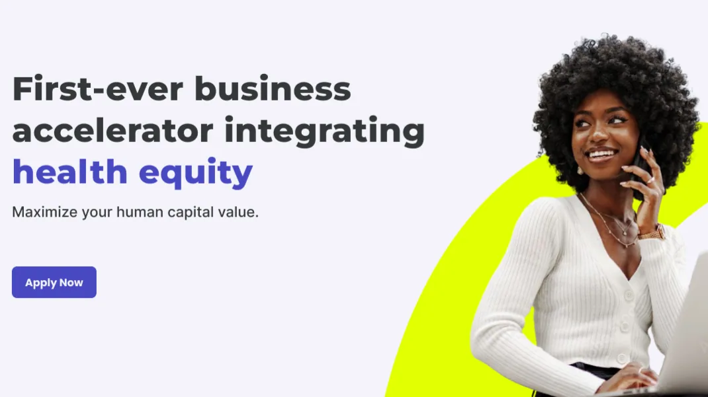
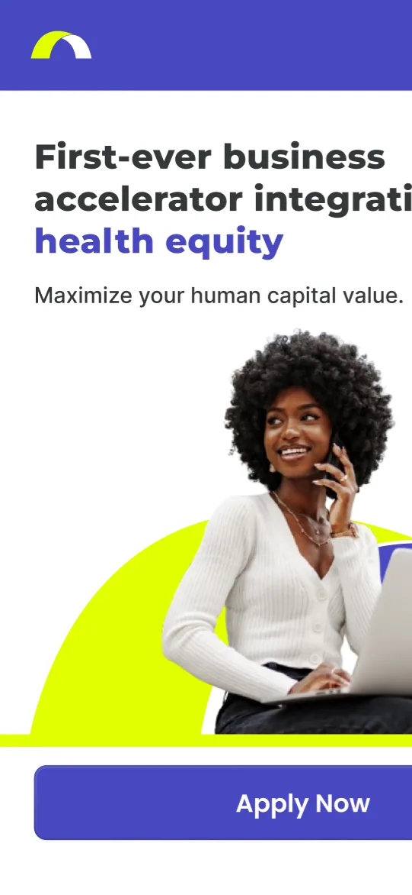

Case study 05 / 06
Bridging Health Equity
Affordable, jargon-free healthcare plans for women- and minority-owned businesses, designed with DiscoverU Health.
- Role
- UX Researcher & UX Designer
- Partner
- DiscoverU Health
- Results
- +40% sign-ups · 85% satisfaction


Overview
Bridging Health Equity (BHE) is a service that makes healthcare more accessible to women and minority-owned businesses, and better tailored to their needs. By tackling critical barriers such as affordability, complexity, and a lack of inclusivity, the platform gives underrepresented communities personalized healthcare solutions.
Problem Statement
Women and minority business owners often face unique challenges in accessing affordable, customized healthcare. Existing platforms aren’t designed with them in mind and often feature unrealistic price plans, jargon-heavy content, and limited options. BHE was created to close these gaps with a streamlined, user-friendly solution tailored to their needs.
Target Audience
BHE’s primary users are women and minority business owners seeking affordable, accessible healthcare plans for themselves, their families, and their employees. They value clarity, simplicity, and inclusivity in their healthcare experience.
My Role
As UX Researcher and UX Designer, I owned user research and competitive analysis, developed personas and journey maps, created wireframes and prototypes, and led usability testing. Working closely with developers and healthcare experts, I kept user needs at the center of the design process.
Process
Understanding the User
The project began with user research. I conducted 10 interviews and surveys with women and minority business owners to uncover their pain points and needs, and stakeholder interviews with healthcare experts deepened our understanding of the challenges users face. The key insights: users struggled with complex healthcare terminology and with comparing plans, and many wanted a platform that was simple, transparent, and visually inclusive.
Next, I ran a competitive analysis of the information, layouts, and other design elements competitors were using, so we could improve on their shortcomings and build a more accessible, intuitive product.
Personas
From these insights, I developed personas such as Maria, a Latina entrepreneur seeking affordable family healthcare, and James, an African American startup owner focused on employee wellness. Journey maps visualized their experiences and highlighted critical frustrations, such as confusion about plan eligibility and difficulty navigating existing platforms.
Generating Solutions
During ideation, the team brainstormed features to address user pain points, focusing on a streamlined plan comparison tool and tooltips that simplify complex healthcare jargon. We then refined these ideas into actionable design solutions.
Bringing Ideas to Life
Low-fidelity wireframes established the basic layout and navigation structure. High-fidelity wireframes followed, with a modern aesthetic, accessible typography, clear call-to-action buttons, and visuals that represent a diverse user base.
Results
Refining the Experience
To evaluate the BHE experience and identify areas for improvement, I led remote usability testing with 5 target users. Participants compared healthcare plans, navigated to bilingual support options, and signed up for an account, while observations focused on their pain points, ease of navigation, and overall satisfaction.
Key Findings
- Unclear navigation: The flow was confusing, particularly when users switched between plan comparisons.
- Complex terminology: Many participants struggled with healthcare jargon, which slowed their progress and led to frustration.
- Weak visual hierarchy: Important information wasn’t prioritized, making content hard to scan and digest.
Design Changes
- Navigation: We restructured the navigation for a more intuitive flow and added breadcrumb trails to help users stay oriented.
- Terminology: We added tooltips and a glossary so users could easily understand healthcare terms.
- Visual design: We updated color contrast, font sizes, and spacing to improve readability and accessibility.
Outcome
The final BHE design successfully addressed user needs. Testing showed a 40% increase in sign-ups, and the platform received an 85% satisfaction score in usability tests, with users highlighting its simplicity and inclusivity.
Challenges & Lessons
One of the biggest challenges was simplifying complex healthcare plan information while keeping the platform informative. Breaking information into digestible pieces and using interactive features like tooltips helped us strike the right balance. Usability testing underscored the value of user feedback, and the project as a whole reinforced the importance of empathy and iteration. It taught me that designing for underserved groups requires ongoing collaboration, listening, and adaptability.
Conclusion
BHE shows how user-centered design can help address social inequities. It was a rewarding opportunity to apply my research, design, and testing skills to create a meaningful solution for a critical issue.